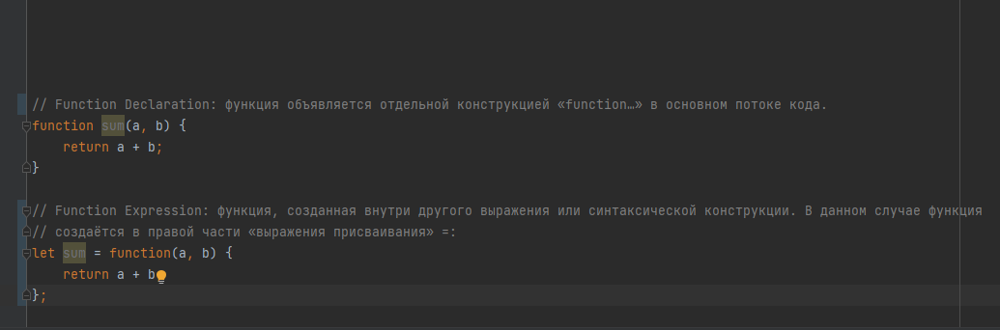
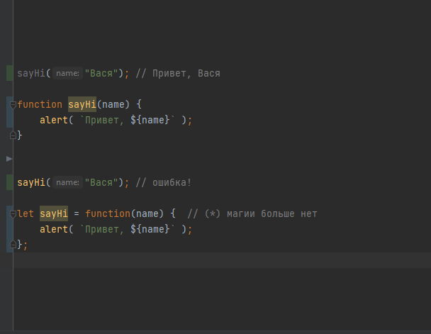

Стрелочные функции, основы
-
анонимные функции с особым синтаксисом, которые принимают фиксированное число аргументов и работают в контексте включающей их области видимости
-
Если у нас только один аргумент, то круглые скобки вокруг параметров можно опустить, сделав запись ещё короче:
-
Если аргументов нет, круглые скобки будут пустыми, но они должны присутствовать:
-
Стрелочные функции можно использовать так же, как и Function Expression.
-
используя Function Expression

-
Функция – это значение, представляющее «действие»
Обычные значения, такие как строки или числа представляют собой данные.
Функции, с другой стороны, можно воспринимать как действия.
Мы можем передавать их из переменной в переменную и запускать, когда захотим. -
Function Expression в сравнении с Function Declaration
 -
Function Expression создаётся, когда выполнение доходит до него, и затем уже может использоваться.
Function Declaration может быть вызвана раньше, чем она объявлена.
